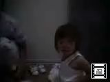
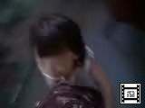
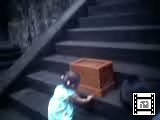
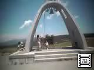

由起子のビデオ(No51-60) |
| 2000年10月8日撮影 (145KB) 今日は運動会。ついつい微笑ましくなってしまう。。。 この時期が一番可愛い年齢だとか。うーん、納得。 |
|
 |
2000年10月8日撮影 (127KB) 自分の意志で着る服も選ぶようになりました。頑固な一面も出てきて ママもパパも「かなんなー」と思うことがしばしば・・・。 |
| 2000年8月27日撮影 (97KB) 市民プールでの様子。このあと、インターネットビューカムを見て 「ママ、違う！それパパの」とものすごい勢いで、奪い取りに来ました。 |
|
| 2000年8月16日撮影 (169KB) 福井の「恐竜エキスポ」では、パビリオンを怖がるくせに、どこにでも あるこの「風船ランド」が、一番楽しめた模様。 |
|
 |
2000年8月14日撮影 (123KB) 「これ、うっちゃんの！（私のものよぉー）」と言う言葉が、最近頻繁 出てきます。頑固さも天下一品だぁ。。。 |
| 2000年8月13日撮影 (137KB) 流れ落ちる爆音と、ものすごい水量にビックリした「華厳の滝」。 言葉の発達と共に、大きな声でお歌も歌えるようになりました。 |
|
| 2000年8月12日撮影 (215KB) レパートリーは、「ちょうちょう」「カエルの歌」「げんこつ山のたぬき さん」「さっちゃん（の由起ちゃん版）」「ハッピーバースディ」などなど。 |
|
 |
2000年8月12日撮影 (151KB) 日光の「大猷院／徳川家光公の墓所」前。 お賽銭を入れ、お参りをする由起子。このあたり一帯が３５０年ぶ りに一般公開されていて、なんとなく荘厳な感じがしました。 |
| 2000年7月23日撮影 (113KB) みんなで「ミニ花火」を楽しむ。由起子にとっては、初めてのこと。 ママはやっぱりハラハラしてしまう・・・。 知らず知らずに「火」のところへ手を持っていきそうな由起子だから。 |
|
 |
2000年7月23日撮影 (175KB) 霧が峰高原の散歩途中にある鐘。嬉しそうにひもを引っ張って 鳴らします。 |